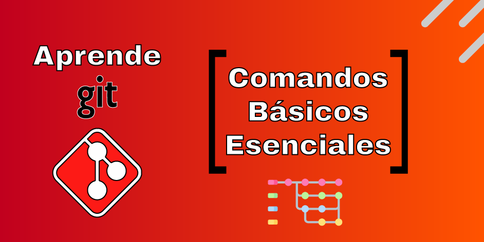
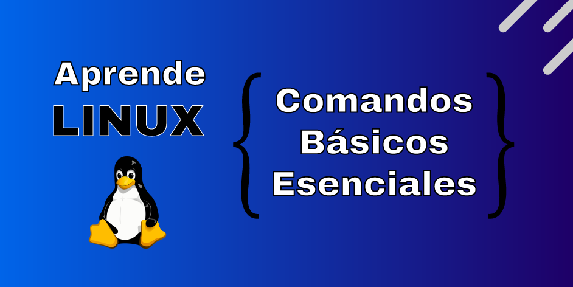

Aprende Git
Git es un sistema de control de versiones que nos permite llevar un registro de los cambios que realizamos en nuestro código fuente.
En esta sección encontrarás los blogs que he escrito sobre algunas tecnologías.
Aprende GitGit es un sistema de control de versiones que nos permite llevar un registro de los cambios que realizamos en nuestro código fuente. |
Aprende LinuxLinux es un sistema operativo de código abierto, que nos permite realizar tareas de administración de sistemas. |
|---|---|
|  |  |


|
|
Aprende KotlinKotlin es un lenguaje de programación que nos permite desarrollar aplicaciones móviles para Android. |
Login/Auth en Jetpack ComposeImplementación de Autenticación en Jetpack Compose con Retrofit. |
|---|---|

|
|
|
|
|